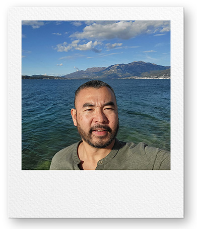

Bio

Kazuo Kusumi is a Bay Area graphic designer whose digital artwork aims to inspire happiness, curiosity, and wonder. Growing up in Tokyo, Japan, he developed an appreciation for visual details and the power of design to connect people. After moving to the Bay Area to study business, Kazuo discovered his passion for graphic design and began exploring visual storytelling through digital media. Inspired by his travels to many different countries, his work incorporates diverse colors, places, and cultural experiences to create imaginative designs.
His vinyl record jacket design was selected for display at the CSM Design Showcase. Through his creative work, Kazuo hopes to spark curiosity and encourage people to discover new perspectives on the world around them.
Artist Statement
I see graphic design as a way to bring moments of discovery into everyday life. For instance, during my visit to the Mezquita in Córdoba, I was captivated by its endless red-and-white arches, rhythmic columns, and the unexpected harmony of repetition and color. That experience changed how I see visual elements, showing me how simple shapes and patterns can create something powerful and memorable. I carry that sense of discovery into my work, drawing inspiration from different cultures, places, and experiences without simply reproducing what I see.
My design approach combines visual richness with simplicity and function, creating work that is both engaging and approachable. I want my designs to do more than communicate; I want them to spark curiosity, invite a second look,
and make everyday experiences feel a little more extraordinary.